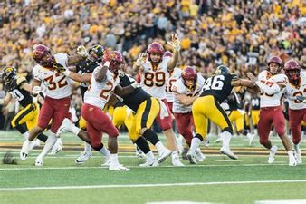
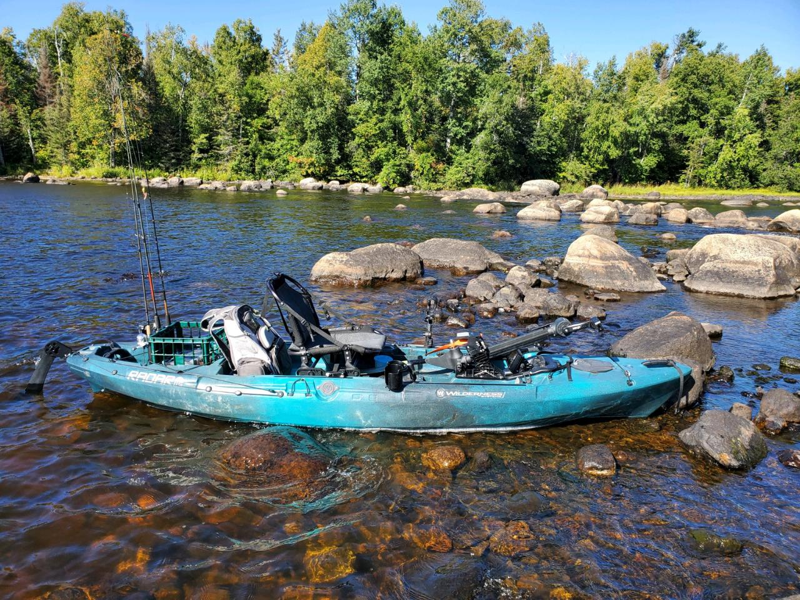

SSgt. Christopher Allen Prior Favorite Hobbies
Chris enjoys being with his friends and family. Some of his hobbies are golf, fishing and watching college football with his family. He likes golfing because of its relaxing and competitiveness on the golf course. He has always had a passion for football, its his favorite sport and is a diehard Iowa Hawkeyes fan. Chris says he “enjoys the effort of getting better at something.” He looks forward to trout fishing with his family every year in northeast Iowa. Eventually he would like to go sky diving and hunting for the first time just to feel the adrenaline rush and eat meat that he was able to obtain himself rather than from a grocery store.
Chris is obsessed with the Iowa Hawkeyes. He will never miss a game. Since an early age Chris has played football and was even the captain of his high school football team. He loves watching sports and even sports betting. He won over $1000 in 2021 betting on one golf game alone.

Another one of Chris's favorite things to do is fishing. His favorite fish is trout. Believe it or not there are many places to trout fish in Iowa but his favorite place is around Lansing, Iowa. Chris will go up multiple times a year to fish.